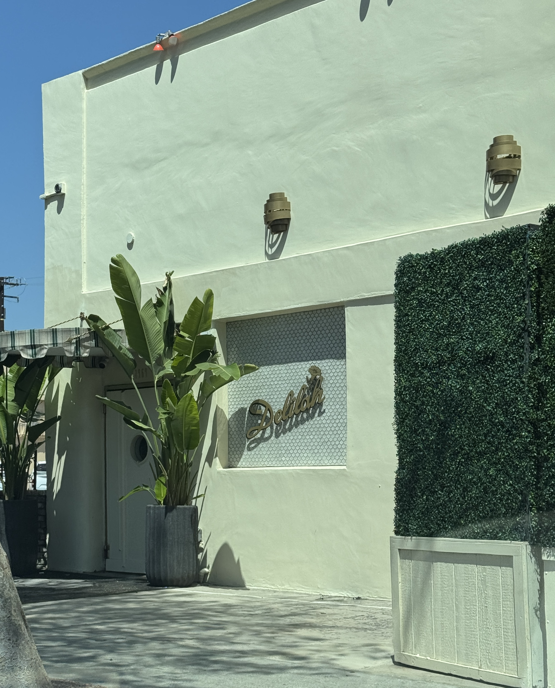

Peanuts
location_on
Address
7969 Santa Monica Boulevard, West Hollywood, CA 90046
calendar_month
Active Dates
1979 - 1988

Peanuts Building, Angela Brinskele, 2026
About this location
Peanuts was a popular lesbian nightclub and disco in a historic building, which housed the burlesque club the Pink Pussycat College of Strip Tease until 1970. Soon after, Alice Schiller then transformed the space into Peanuts, a lesbian nightclub that evolved over time into a mixed LGBTQ+ space. The club was known for its sexually uninhibited atmosphere. The club attracted young financially privileged women for wild nights out. By 1995, the space lost its lesbian character and became Club 7969, a strip club that served both straight and LGBT patrons.
Categories
Lesbian Space
Sources
- bookFaderman, Lillian, and Stuart Timmons. Gay L.A.: A History of Sexual Outlaws, Power Politics, and Lipstick Lesbians. New York: Basic Books, 2006.; Siegmund, Heidi. "Club Review: 7969: Equal Opportunity Enjoyment." Los Angeles Times, March 24, 1995.
- bookhttps://www.latimes.com/archives/la-xpm-1988-03-17-we-1903-story.html
- book"The Pink Pussycat College of Strip Tease." Atomic Redhead, July 11, 2018. — https://atomicredhead.com/2018/07/11/the-pink-pussycat-college-of-strip-tease-where-yesteryears-strippers-learned-their-craft/